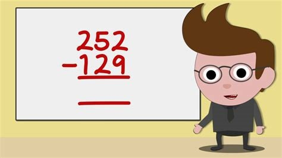

Subtraction
Like addition, subtraction is also one of the oldest and the most basic arithmetic operations. The word subtraction is derived from the two words, ‘sub’ and ‘tract,’ which mean under or below and to pull or carry away, respectively. Therefore, subtraction means to carry away the lower part. Subtraction is known to mathematicians for more than 6000 years. German Mathematicians first used the symbol of subtraction as markings on barrels. It is then used as an operational symbol in the 1500s. Later in 1557, it became common when Robert Recorde, a famous Physician and Mathematician, used it in the Whetstone of Witte.

Subtraction Definition
In the 1200s, the method of subtraction was called borrowing or decomposition. After 1600, the mathematicians introduced the term subtraction and defined it as a mathematical operation where an amount is taken away from the total amount. It is also the difference between the two amounts.
Subtraction is denoted by a hyphen (-).
For example, in the subtraction sentence 20 – 5= 15, 5 is taken away from 20, leaving 15. The subtraction sentence has four main parts: the subtrahend, the minuend, an equal sign, and the difference. Understanding parts of a subtraction sentence is useful because it enables the learners to grasp key subtraction principles and develop strategies to tackle subtraction problems.
Parts of Subtraction
The Minuend
The minuend in the subtraction sentence is the starting amount from which other amounts are taken away. For example, in a subtraction sentence: 12 – 8 = 4, the minuend is 12.
The Subtrahend
This the number being taken away from the starting amount. In the subtraction sentence: 12 – 8 = 12, the subtrahend is 8. A subtraction sentence can have multiple subtrahends, depending on the complexity of the equation.
The Equals Sign
The equals sign being the third part of any subtraction sentence indicates that the two sides of the equation are equivalent. The equals sign is denoted by ‘=’ and is inserted between values being subtracted.
The Difference
In a subtraction sentence, the difference is the answer or result of the operation. For instance, 12 – 8 = 4; the difference, in this case, is 4.
Properties of Subtraction
- Identity Property
The identity property states that any number minus or plus zero is the number itself. For example,
4 – 0 = 4.
For this case, it is advisable to remind learners when subtracting large groups of numbers that the number zero does not affect other numbers in the equation.
- Inverse Operations
Addition and subtraction are normally opposites of each other. For example,
12 + 5 – 5 = 12.
Adding and subtracting the same amount is the same as canceling the two amounts. For this reason, students are encouraged to identify numbers that cancel each out, especially when dealing with the addition and subtraction of large groups of numbers.
- Commutative Property
The commutative property states that the change of numbers in a mathematical equation does not affect the final answer. The commutative property does not apply to subtraction because 5 – 2 is not the same as 2 – 5.
- Associative Property
The associative property is applied to equations that use brackets, braces, and parentheses to group numbers together. In other words, you can move the parentheses around different groups without changing the final answer.
This property is also not applicable to subtraction because: (3 – 4) – 2 is not equivalent to 3 – (4 – 2). This shows that you cannot move the brackets around when working on a subtraction equation.
Solved Example
Example 1
Sam has 99 cupcakes. If he gave 32 to Nina and 49 to Julie, how many cupcakes left with him?
Solution
Total number of cupcakes = 99
Nina takes = 32
Julie takes = 49
Number of cupcakes left = 99 – 32 – 49 = 18
Example 2
In 2012, a company had a staff of 1000 employees. Due to the recession, the company terminates its 230 employees in 2015 and 220 employees in 2017. If the company does not hire any new employees in this period, determine the number of employees by the end of 2017.
Solution
Total employees in 2012 = 1000
Company terminates its 230 employees in 2015,
Employees left = 1000 – 230 = 770
Company terminates 220 employees in 2017,
Employees left = 770 – 220 = 550
Example 3
James, Mike, and Curran have bank accounts in Central Bank. Mike has $500 more than James, and Curran has $300 less than James. If Mike has $1200 in his account, how much does Curran have?
Solution
Mike = James + $500
Curran = James – $300
James = Curran + $300
Mike = Curran + $300 + $500
Curran = Mike – $300 – $500
Curran = Mike – $800
Curran = $1200 – $800
Curran = $400
SUBSTRACTION OF TWO NUMBERS
View Result: